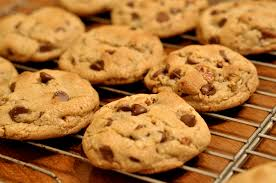

Cookies

Description
These homemade cookies are chewy, sweet, and perfect with a glass of milk!
Ingredients
- 1 cup sugar
- 1 cup brown sugar
- 2 cups all-purpose flour
- 1 tsp baking soda
- 1/2 tsp salt
- 1 cup butter (softened)
- 2 eggs
- 1 tsp vanilla extract
- 1 cup chocolate chips
Steps
- Preheat your oven to 350°F (175°C).
- In a bowl, cream together the butter, sugar, and brown sugar.
- Add eggs and vanilla extract. Mix well.
- In another bowl, combine flour, baking soda, and salt.
- Gradually add dry ingredients to the wet mixture and mix.
- Fold in the chocolate chips.
- Drop spoonfuls of dough onto a baking sheet.
- Bake for 10–12 minutes or until golden brown.
- Let the cookies cool before serving. Enjoy!
Back to Home